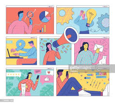

La interfaz de usuario y interacción humano ordenador
La interfaz de usuario
Hoy en día es comun confundir los conceptos de interfaz de usuario y experiencia de usuario, tambien
conocidos con las siglas en ingles (UI) y (UX), mientras que (UI) user interface hace referencia a la interfaz
visual de una herramienta de software; mientras que (UX) user experience hace referencia a la experiencia del usuario
mientras la utiliza. El diseño de una interfaz de usuario, más allá de resultar estéticamente agradable.
Ya que antes del agrado visual producido por la experiencia, los usuarios le dan más importancia a su nivel
de frustración durante esta.
Los diseñadores debemos tener como prioridad el obtener una herramienta de uso fácil y conveniencia para el usuario.
Jakob Nielsen (2012) define el término usability como una característica propia de una herramienta de software,
que lejos de ser una propiedad unidimensional, debe ser fácil de usar además debe de ser eficiente así permitiendo
al usuario mejorar su productividad cuando lo utilice, que sea fácil de recordar que si el usuario comete errores se
puedan corregir fácilmente.
El diseño centrado en el usuario (user centered desing); en el se describen el proceso diseño con base en el usuario y
sus necesidades, la importancia de este concepto está basado en que los siempre están involucrados en el proceso y tienen
mucho impacto en el. Con base en este concepto, antes de iniciar, es de vital importancia preguntarse, ¿quién va a utilizar
esta herramienta?, ¿para qué la va a utilizar?, ¿en qué ambiente espera utilizarla? Ya que no es lo mismo una herramienta
para usos laborarles que una para hacer compras por internet, si en el proceso de desarrollo no se toma al usuario y sus
necesidades como pilar, se podría arruinar la experiencia por completo, que quiere decir esto que podríamos arruinar una
brillante idea. Las ideas de los usuarios también pueden servir de base para el look y feel, ósea estéticamente agradable
por la tipografía, colores y elementos gráficos, de manera que el usuario mejore su experiencia y a su vez la interfaz logre
capturar por completo su atención, pensar en el usuario y en sus necesidades, va a permitir determinar las acciones,
funciones y elementos necesarios dentro del diseño.
Porque hay que ser sinceros. ¿Cuándo fue la última vez que usted, como usuario, realmente leyó toda la información de un sitio web?
Como usuarios no leemos hojeamos la información. Por esto es importante limitarse a la mínima cantidad de esta, la que lleve a las
funciones precisas que el usuario busca. Mientras que un diseñador o desarrollador puede incluir toda la información que un usuario
podría necesitar. Es por esto por lo que los textos, dentro de una herramienta, juegan un papel importante. Y es que por medio de estos
se puede ayudar al usuario a guiarse. No solo la selección de palabras apropiadas es indispensable para no confundir, también lo es la
utilización de tipografía de diferentes tamaños o grosores para jerarquizar la información. Si algo es completamente irrefutable es que
la jerarquía visual y la unidad en los elementos de un diseño son fundamentales para que el usuario comprenda de manera clara la información
que se le presenta.
Interacción Humano Ordenador
Cuando se habla de la interacción entre las personas y la tecnología, es fácil perder el equilibrio y poner el énfasis en las personas o
la tecnología, Terry Winograd, afirma: “La interacción persona-ordenador es el tipo de disciplina que no es ni el estudio de los seres humanos,
ni el estudio de la tecnología, sino más bien el puente entre ambos. Es por este motivo por lo que siempre hay que estar con un ojo puesto
en la pregunta: ¿qué puede hacer la tecnología? ¿Cómo se puede construir? ¿Cuáles son sus posibilidades? Y con el otro en: ¿qué hacen las personas
y cómo utilizan la tecnología? ¿Qué querrían hacer con ella? Si pierdes de vista alguno de estos aspectos, te equivocarás a la hora de diseñar... Creo
que el reto es obtener el conocimiento tanto de la tecnología como de las personas para desarrollar cosas nuevas”.
Don Norman añade: “Los sistemas que sean usables, seguros y funcionales, acercarán mutuamente al usuario y el ordenador y, en consecuencia, el espacio
entre la tecnología y las personas disminuirá. Eventualmente podríamos conseguir que este espacio fuera nulo y llegar al caso ideal en el que el ordenador
sea invisible.
La tecnología aún tiene un largo camino por recorrer, con el paso del tiempo la tecnología se ha vuelto de vital importancia en muchos hábitos de la vida
de las personas, vivimos rodeados de la tecnología, en muchas ocasiones tiende a hacernos la vida mas sencilla, pero que en algunos momentos son complicadas
de utilizar, la tecnología está presente en forma de ordenador, entre muchas cosas que utilizamos para hacernos la vida mas sencilla, que se han convertido en
una parte fundamental de nuestro día a día.
Los profesionales de la tecnología sean informáticos, diseñadores o psicólogos, tienen que desarrollar productos que respondan a las necesidades de los usuarios,
que puedan utilizar sin que generen frustraciones para lograr sus objetivos. En este contexto, el concepto de diseño es de gran importancia puesto,Interacción
persona-ordenador que precede al desarrollo y determina su éxito o fracaso. Hay que diseñar soluciones a productos y servicios, hay que diseñar la tecnología de
estos productos y las funcionalidades que ofrece, hay que diseñar interfaces para que las personas las puedan utilizar, en definitiva, hay que diseñar la experiencia
de los productos y servicios interactivos. La importancia del diseño en la tecnología nos presenta también una paradoja interesante. Si un producto interactivo está
bien diseñado, su interfaz y su interacción nos pasan desapercibidas. Así pues, cuanto mejor diseño tenga la interfaz y la interacción, menos la notaremos y,
por lo tanto, menos se verá el trabajo de su diseñador. En consecuencia, cuanto mejor sea el diseñador, menos reconocido estará. El trabajo del profesional de la
interacción persona-ordenador es un reto constante y que pasa desapercibido cuando se logra el objetivo de hacer la tecnología invisible.
En la actualidad, el término IPO se utiliza principalmente en ámbitos académicos y de investigación. Por eso estos materiales toman este nombre. En la práctica,
se trata la experiencia de usuario desde sus diferentes vertientes y ámbitos de aplicación, poniendo un énfasis especial en el diseño centrado en el usuario como
aproximación a la realización y desarrollo de proyectos que persiguen obtener productos interactivos usables y satisfactorios para las personas.